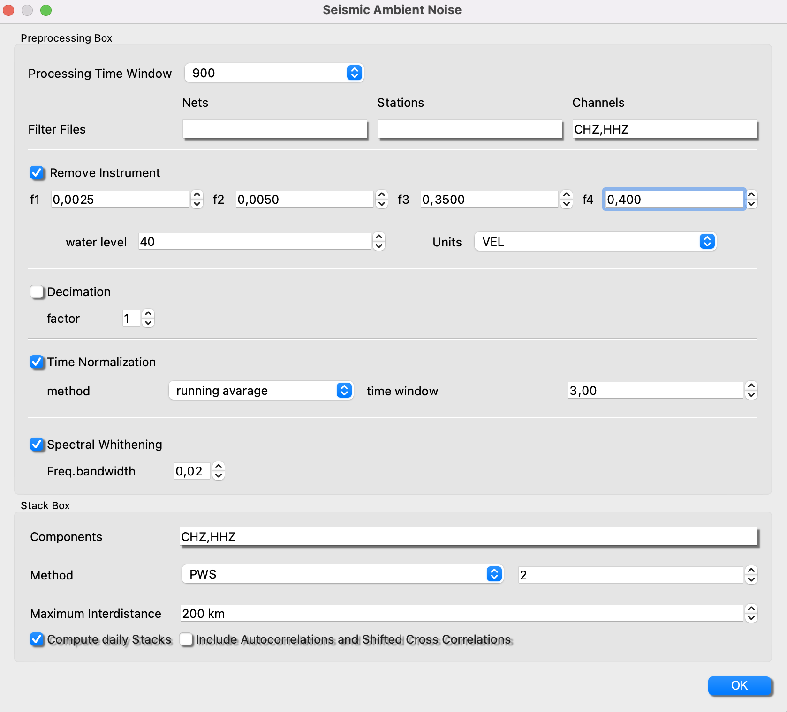

Ambient Noise Tomography (in progress)
The module ANT, currently is just designed to retrieve the Empirical Green Functions (EGFs).
EGFs
-
Setting Parameters for the pre-processing steps of the EGFs.

-
Setting Metadata and Files Path
To set the path to the metadata of your network and the path where you have hosted your seismogram files. The files can be located in any kind of structure, for example in SDS arquitecture (NETWORK/STATION/CHANNEL/FILES) or simply everything in one single folder. Then set the folder where you want the output of the pre-processing and the EGFs.
- Run pre-processing
Now, click on Run pre-processing. This action will load your settings and will make a database of the available files. Then the process will start to process the data. Finally per every station/channel a file will be saved containing a matrix with the noise data in frequency domain, ready to cross-correlate.
- Run Stack
This action will load files from the pre-processing step and then for every channel-channel combination will do a cross correlation and stack all the stacks will be saved in the .outpur_directory/stack.

- Process and Plot
In this point the user can set the path to the output files (hdf5 or sac files), read the files and then process and plot. The user can also establish a Macro to process the EGFs, plot a map and sort the EGFs by inter station distance. Notice that autocorrelations will be 0 distance.
Clock Synchronization
Dispersion Curves

Dispersion Maps